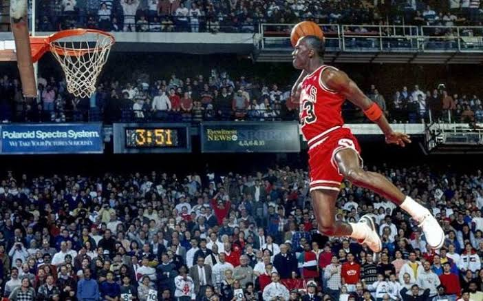
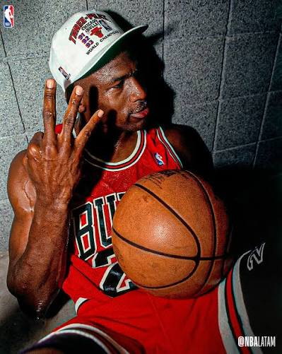
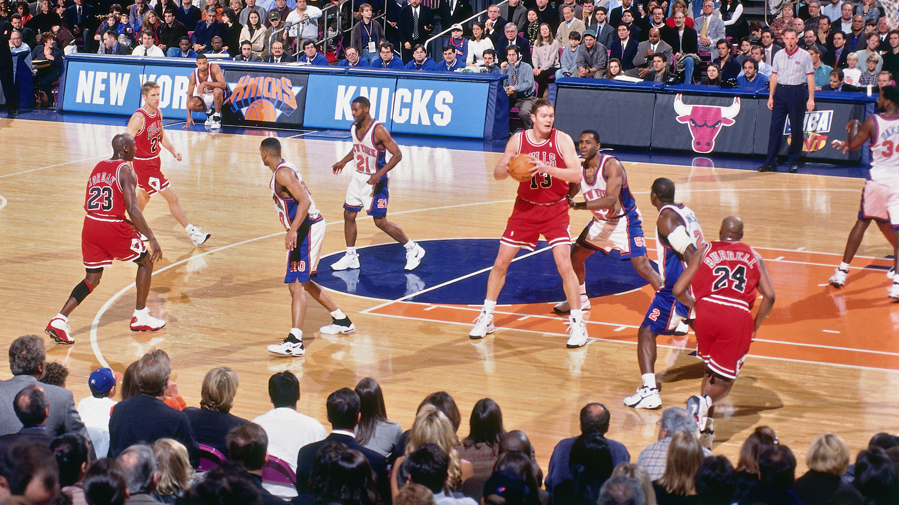
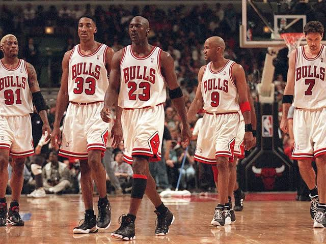
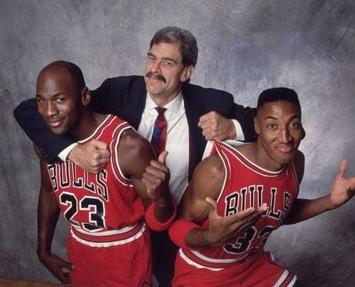
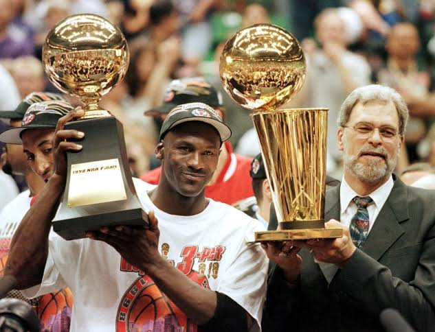

¿Nike firma un contrato gigante con una leyenda de los Bulls?
Nosotros somos farandula y deporte
Recordando leyendas e historias.
En 1984, la firma de Nike con Michael Jordan revoluciono los patrocinios deportivos gracias a una intensa campaña de persuasión liderada por el cazatalentos Sonny Vaccaro y el respaldo incondicional de los padres del jugador, Deloris y James Jordan. Aunque Michael prefería inicialmente a Adidas, la marca alemana no pudo igualar la oferta de Nike, mientras que Converse, que ya patrocinaba a estrellas como Larry Bird y Magic Johnson, no lo priorizó como la figura central de su marca. Para asegurar el fichaje, el director ejecutivo de Nike, Phil Knight, y el diseñador Peter Moore no solo ofrecieron una cifra récord de 2.5 millones de dólares por cinco años, sino que aceptaron una exigencia sin precedentes de Deloris Jordan: otorgar a Michael un porcentaje de regalías por cada zapatilla vendida, además de la creación de su propia línea personalizada, las Air Jordan. El rotundo éxito comercial de este acuerdo transformó a Nike de una empresa enfocada en el atletismo a un titán global del baloncesto, redefiniendo para siempre la relación entre los atletas y las marcas de ropa deportiva.
La gran polémica de las Air Jordan 1 se resume en una brillante estrategia de marketing basada en una verdad a medias y un doloroso sacrificio por nostalgia. En 1985, Nike explotó comercialmente una advertencia de la NBA sobre la regla de uniformidad para crear el mito de que las Air Jordan 1 "Banned" estaban prohibidas y que pagaban 5,000 dólares de multa por partido, cuando en realidad el modelo vetado en pretemporada había sido el Nike Air Ship. Años después, en 1998, la polémica se trasladó al Madison Square Garden cuando Michael Jordan decidió jugar su último partido allí usando unas Jordan 1 originales de 1985; sin embargo, al quedarle una talla más chicas y carecer de amortiguación moderna, terminó el encuentro con los calcetines empapados en sangre y heridas severas, anotando aun así 42 puntos en una de las noches más dolorosas e icónicas de su carrera.


Las estrategias del equipo más ganador de la historia durante la vuelta a la gloria
El Triángulo Ofensivo:
Phil Jackson implementó un sistema basado en la geometría y la lectura de juego, donde los jugadores se movían en la cancha reaccionando a la defensa en lugar de usar jugadas fijas. Esto liberaba de presión a Michael Jordan al distribuir el balón hacia tiradores abiertos como Steve Kerr, permitiéndole dosificar su energía para liquidar los partidos en los minutos finales.
Defensa Versátil y Small-Ball:
Los Bulls revolucionaron los años 90 con un quinteto atlético capaz de cambiar de marca constantemente sin perder ventajas físicas. En los cierres de juego, Jackson sentaba al pívot tradicional para usar alineaciones pequeñas (small-ball) con Dennis Rodman como el hombre más alto, lo que aumentaba drásticamente la velocidad de rotación y aseguraba el control de los rebotes.
Gestión Mental y Espiritual:
El éxito dependió del manejo psicológico de Jackson, quien integró meditación zen y yoga para mantener enfocado a un equipo acosado por la presión mediática. En lugar de imponer disciplina rígida, gestionó los grandes egos con empatía, otorgándole libertades controladas a Dennis Rodman a cambio de una intensidad destructiva e impecable en la cancha.


Nuestro Entrenador: Phil Jackson
Phil Jackson dirigió a los Chicago Bulls entre 1989 y 1998, periodo en el que conquistó seis campeonatos de la NBA gracias a una revolucionaria filosofía de liderazgo que combinaba la espiritualidad oriental, la psicología humanista y las tradiciones de los nativos americanos, ganándose el apodo de el «Maestro Zen». A diferencia de los entrenadores tradicionales que basaban su autoridad en la disciplina estricta y los gritos, Jackson introdujo en el vestuario prácticas de meditación en salas completamente oscuras, ejercicios de respiración consciente (mindfulness) y lecturas personalizadas de libros para que sus jugadores aprendieran a mantener la calma absoluta en momentos de máxima presión competitiva. Esta mentalidad fue clave para gestionar los complejos egos del equipo, logrando que una superestrella como Michael Jordan compartiera más el balón, potenciando el talento polivalente de Scottie Pippen y ofreciendo la libertad y el respeto que el rebelde Dennis Rodman necesitaba para comprometerse con la causa común. En el aspecto táctico, Jackson plasmó este desapego del ego a través de la ofensiva triangular diseñada junto a su asistente Tex Winter, un sistema de juego flexible que no dependía de jugadas fijas, sino de que los cinco jugadores en pista leyeran los movimientos del rival en tiempo real y reaccionaran en perfecta sintonía y compañerismo, transformando así a un grupo de talentos individuales en una de las dinastías colectivas más dominantes y resilientes en la historia del deporte mundial.


Los 3 Campeonatos de los Chicago Bulls
1996 (Chicago Bulls 4 - 2 Seattle SuperSonics):
El regreso del rey. Tras el primer retiro de Jordan y la llegada de Dennis Rodman, los Bulls firmaron una temporada regular histórica de 72-10. En las finales se adelantaron 3-0, pero los agresivos Sonics de Gary Payton y Shawn Kemp forzaron el sexto encuentro. Chicago sentenció la serie en casa el Día del Padre, dejando una de las imágenes más emotivas de Jordan llorando en el suelo del vestuario recordando a su fallecido progenitor.
1997 (Chicago Bulls 4 - 2 Utah Jazz):
El corazón de un campeón. El inicio de una encarnizada rivalidad contra la dupla John Stockton y Karl Malone. La serie se empató 2-2, abriendo paso al mítico “Flu Game” (Partido de la Gripe): un Jordan visiblemente enfermo y deshidratado anotó 38 puntos en el quinto juego para darle la ventaja a Chicago. En el sexto partido, ante la doble marca sobre Jordan, este confió en Steve Kerr, quien anotó el tiro de media distancia definitivo para levantar el quinto anillo.
1998 (Chicago Bulls 4 - 2 Utah Jazz):
El baile final (The Last Dance). Con el equipo al borde de la desintegración institucional y el físico al límite, se volvieron a ver las caras con Utah. Tras una paliza histórica de Chicago en el tercer juego (96-54) y batallas extenuantes, la temporada terminó en Salt Lake City con el legendario sexto partido. Con Scottie Pippen lesionado de la espalda, Jordan robó un balón crucial a Karl Malone y anotó el inolvidable tiro libre de marca conocido como "The Last Shot" a 5.2 segundos del final, cerrando con broche de oro la era más gloriosa de los Bulls.


Las Leyendas del Plantel
El núcleo de los Chicago Bulls durante la década de los 90 estuvo conformado por un quinteto legendario que dominó la liga con una combinación perfecta de talento ofensivo, intensidad defensiva y carácter competitivo.
Liderados por el instinto implacable de Michael Jordan, la versatilidad de Scottie Pippen y la presencia defensiva y rebotera de Dennis Rodman, cada pieza del equipo cumplió un rol fundamental para construir una de las dinastías más grandes e imborrables en la historia del deporte mundial.